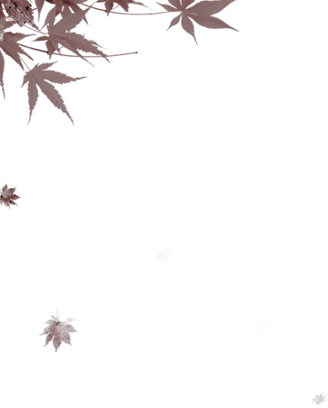
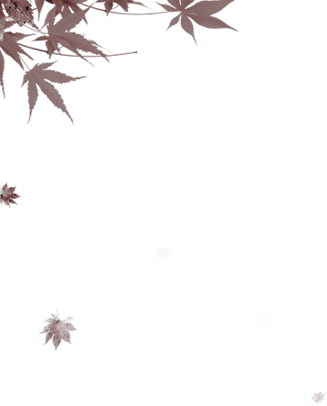

同学聚会
 


2035.6.6
甘肃甘谷
我们不见不散
甘谷县第四中学
15届高三9班
20周年同学聚会
让我们把旧事重提，把酒放歌尽情狂欢！

2015年甘谷四中高三9班全体师生毕业合影留念
弹指一挥廿四秋，同窗欢聚语不休。
当年韶华春拂面，今日微霜秋染头。
岁月无情天亦老，人生苦短莫添愁。
沉浮淡看轻荣辱，固守纯真心自悠。
二十年如白驹过隙，二十年弹指一挥。
一日同学，百日朋友，那是永远的情。
流水不因石而阻
友谊不因远而疏
拥抱真情永久相约
时光荏冉岁月如歌
回首同学生涯，我们们不仅收获了学业，更
收获了友谊！回顾那青春燃烧的岁月，是那么的
美好、那么的亲切！同桌的笑声记忆犹新，老师
的教诲至今难忘！回首风风雨雨，有太多的感言
有太多的追忆。时光荏冉，岁月如歌，真情不变
青山在，人未老，
同学情正浓；
岁月增，水长流，
情怀依旧深。
因为有缘
我们相聚在四中
因为有缘
我们相互是同学
忘不了你当年的雄姿英发
忘不了你当年的笑语喧哗
忘不了你当年的幽默风趣
忘不了你当年的聪明才智
忘不了你当年的潘岳才华
海内存知己,
天涯若比邻。
同是天涯沦落人,
相逢何必曾相识。
熟悉的面孔依旧清晰
回首往事，
仿佛就在昨天。
简陋的教室，
装载着了我们的孜孜不倦。
熟悉的校园依旧清晰在眼前
岁岁年年花相似，
年年岁岁人不同。
历尽沧桑重聚首，
满眼皆是中年人。

举杯叙旧言不尽，
互道珍重勤叮咛。
知足常乐体健康，
一辈同学三辈亲。
曾经一起上课，
曾今一起放学，
曾经一起背书，
曾经一起受罚，
曾经一起挨批评，
曾经一起谈天说地，
曾经一起的点点滴滴美好，
都已随着毕业远去，
各自去追逐自己的梦想，
踏上了远去的火车。。。
回首往事，记忆尤昨
光阴似箭，日月如梭
今天的相聚
使我们仿佛又回到了昨天
二十年如白驹过隙，二十年弹指一挥。
二十年里，我们收获了多少心路的游记，
时光飞逝，一转眼，二十年过去了，我们的生
活发生了翻天覆地的变化，生活水平更是今非
昔比，只可惜，我们也都已步入老年的行列。
真的是，“岁岁年年花相似，年年岁岁人不同”
啊。一见面同学们都老了，白发早已悄悄的爬
上了额头。学生时代那朝气蓬勃、青春稚嫩的
面孔，早已荡然无存，留在心目中只是那美好
的记忆。但是，这丝毫也挡不住同学们的热情。
每个人都是精神焕发。神采奕奕。
千言万语，唯有祝福。愿我们友谊长存，
激情永在。让我们记住这美好时光，相约数年
再相聚！
聚会详情
1、6月6日上午8点在甘谷县第四中学集合，
9点前往甘谷大饭店。
2、11点达到目的地，安排住宿，就餐。
3、18点晚餐。
4、20点，歌舞会。
5、7点半，早餐。
6、8点半，同学合影。
7、10点，游览风景。
8、12点，午餐，分发纪念品。
9、14点，上车返回老校区，回忆旧时光。
资金筹备
同学聚会本着能者多担、取之于同学
用之于同学的原则进行筹措，同学聚会过程中
每位同学收取100元多交者不限。聚会结束时
如经费节余则进入同学基金(留作下次聚会经
费)，不足则由组委会想办法补齐。希望经济
条件较好的同学能够从经济上大力支持本次
同学聚会，二十年见一面，清茶淡水也是情。
主要用于：聚会期间的餐饮、娱乐费用，
照相合影、制作通信录的费用。
具体详情请咨询本次聚会筹委会。
筹委会名单：李榕，王喜贤，闫文兵
班长：闫文兵（150xxxx78）
报名参加
聚会时间：2035年6月6号
聚会地点：甘谷县第四中学
聚会联系人：老班长（150xxxx78）